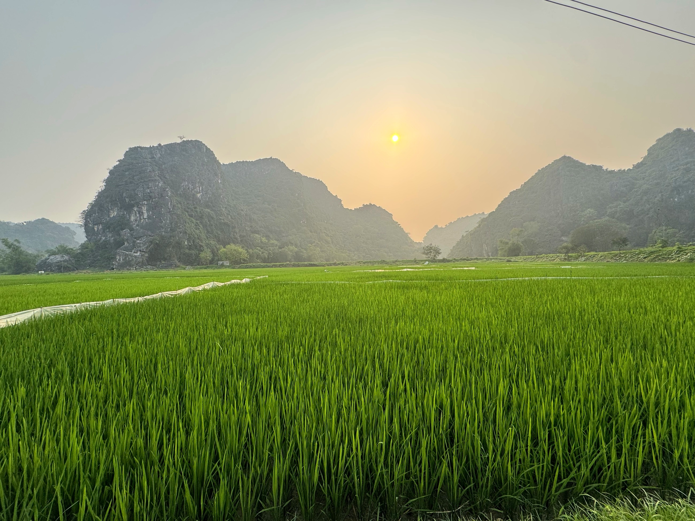

Từ Bản Mường đến Động Hương TíchFrom the Muong Village to Huong Tich CaveFrom the Muong Village to Huong Tich Cave
Từ bản Mường đến động Hương Tích là hành trình trọn vẹn và đậm chất khám phá nhất của Mường Cốc — kết hợp chiều sâu văn hoá bản địa với trải nghiệm thiên nhiên kỳ vĩ. Sau hai ngày sống cùng nhịp thở của bản Mường — từ ẩm thực, văn nghệ, sông nước tới đêm lửa trại — ngày cuối, hành trình thăng hoa với chặng trekking chinh phục động Hương Tích. Đây là chuyến đi cho người muốn cảm trọn cả phần hồn lẫn phần sức của vùng đất Mường.
From the Muong Village to Huong Tich Cave is the most complete and adventurous journey in Muong Coc — pairing the depth of local culture with a magnificent nature experience. After two days living to the breath of the Muong village — from cuisine, performance, and waterways to the campfire night — the final day rises to a climax with a trek up to Huong Tich Cave. This is a trip for those who wish to feel both the soul and the strength of the Muong land in full.
From the Muong Village to Huong Tich Cave is the most complete and adventurous journey in Muong Coc — pairing the depth of local culture with a magnificent nature experience. After two days living to the breath of the Muong village — from cuisine, performance, and waterways to the campfire night — the final day rises to a climax with a trek up to Huong Tich Cave. This is a trip for those who wish to feel both the soul and the strength of the Muong land in full.
5 lý doreasonsreasons
Hành trình The The trong ngàyjourneyjourney
Những điểm Places you'll Places you'll bạn sẽ quadiscoverdiscover




Bao gồm Included Included & không& not& not
Đã bao gồmIncludedIncluded
- Phương tiện di chuyển nội vùng và mũ bảo hiểmIn-region transport and helmetIn-region transport and helmet
- Hướng dẫn viên bản địa am hiểu văn hoá MườngLocal guide well-versed in Muong cultureLocal guide well-versed in Muong culture
- Vé tham quan và các hoạt động trải nghiệm theo chương trìnhEntrance fees and all experience activities in the programmeEntrance fees and all experience activities in the programme
- Các bữa ăn đặc sản Mường theo lịch trìnhMuong specialty meals per the itineraryMuong specialty meals per the itinerary
- 02 đêm lưu trú tại homestay cộng đồng người Mường2 nights' stay at a Muong community homestay2 nights' stay at a Muong community homestay
- Chương trình lửa trại, văn nghệ, trò chơi dân gian và ngâm chân lá thuốc buổi tốiThe evening campfire, performance, folk games, and herbal foot-soak programmeThe evening campfire, performance, folk games, and herbal foot-soak programme
- Người dẫn đường địa phương cho chặng trekking động Hương TíchA local guide for the Huong Tich Cave trekA local guide for the Huong Tich Cave trek
- Nước uống và khăn lạnhDrinking water and cool towelsDrinking water and cool towels
- Bảo hiểm du lịch trọn góiComprehensive travel insuranceComprehensive travel insurance
Không bao gồmNot includedNot included
- Đồ uống trong bữa ăn và các bữa ăn ngoài chương trìnhBeverages during meals and any meals outside the programmeBeverages during meals and any meals outside the programme
- Vé thắng cảnh, cáp treo (nếu có) tại khu Hương TíchSightseeing tickets and the cable car (if used) at the Huong Tich areaSightseeing tickets and the cable car (if used) at the Huong Tich area
- Lễ/tiết mục Mo Mường — phụ thu, đặt trướcThe Mo Muong ritual/performance — surcharge, book in advanceThe Mo Muong ritual/performance — surcharge, book in advance
- Đưa đón Hà Nội ↔ Mường Cốc (báo giá riêng theo yêu cầu)Hanoi ↔ Muong Coc transfers (quoted separately on request)Hanoi ↔ Muong Coc transfers (quoted separately on request)
- Tiền tip cho hướng dẫn viên và lái xe địa phương (nếu có — gợi ý)Tips for the guide and local drivers (optional — suggested)Tips for the guide and local drivers (optional — suggested)